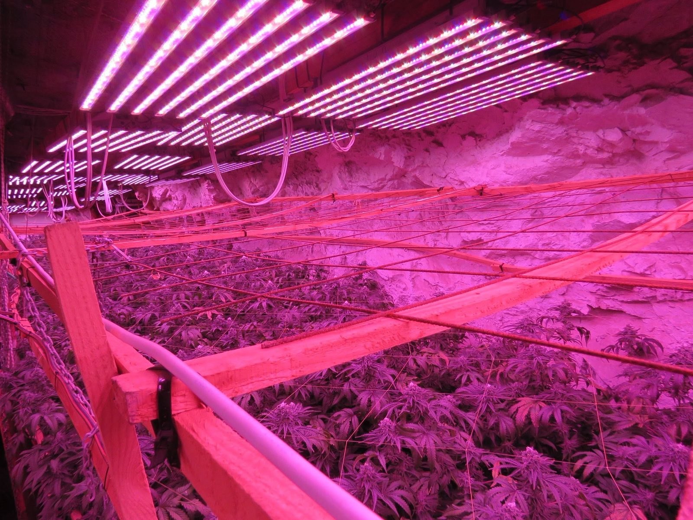
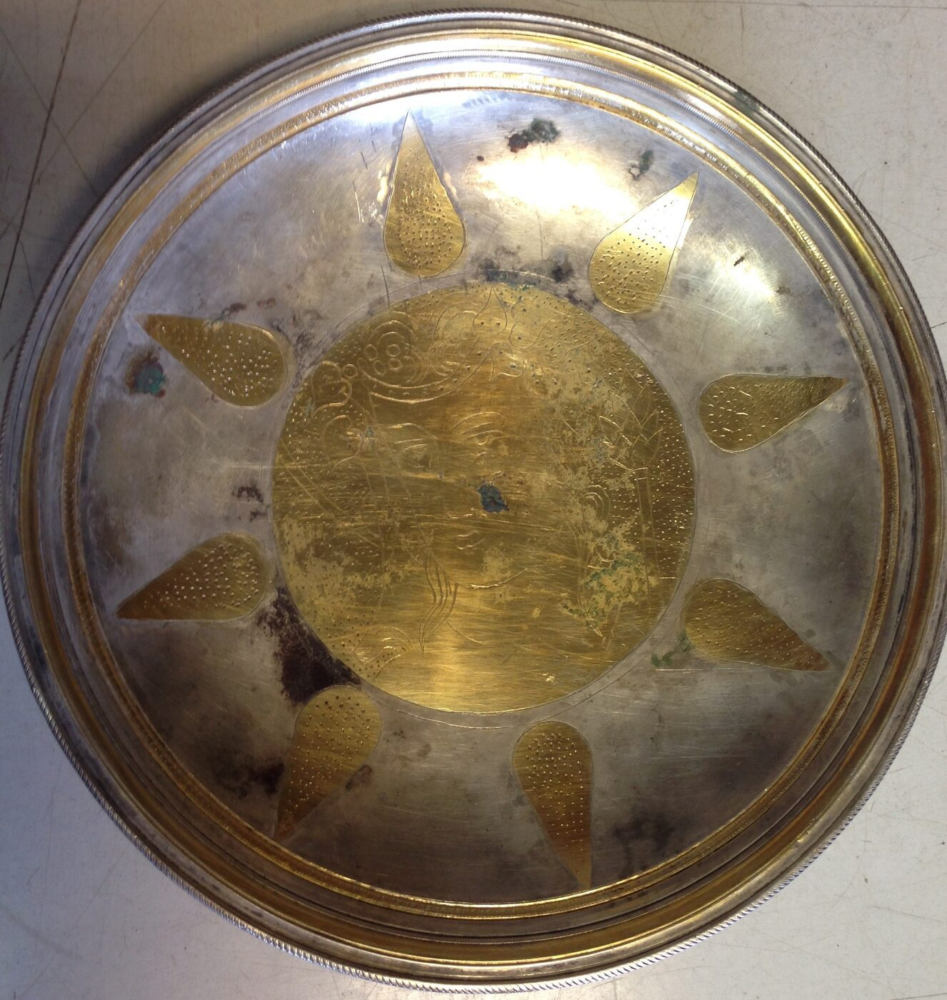
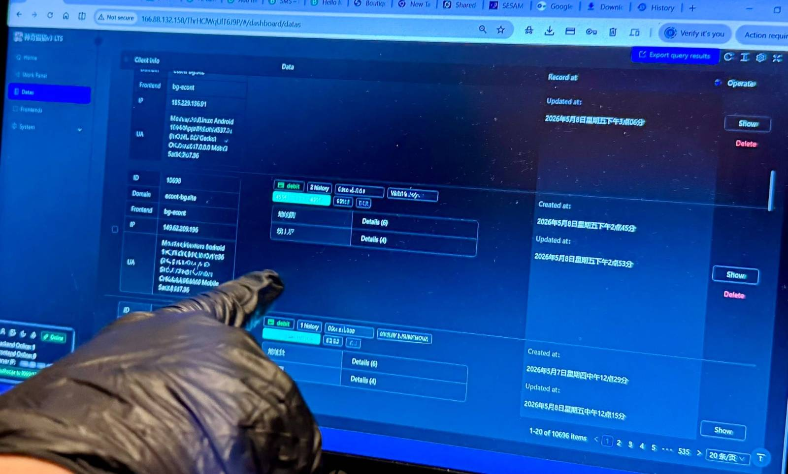
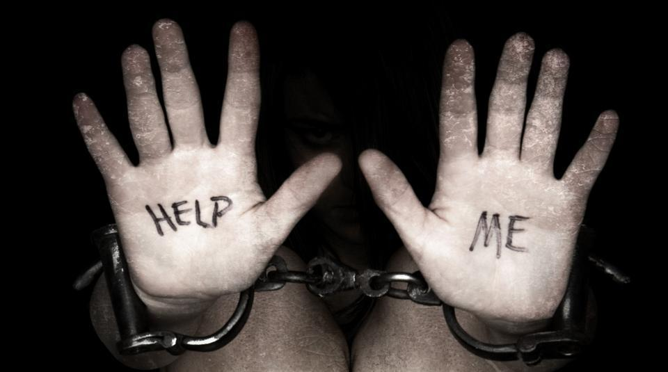
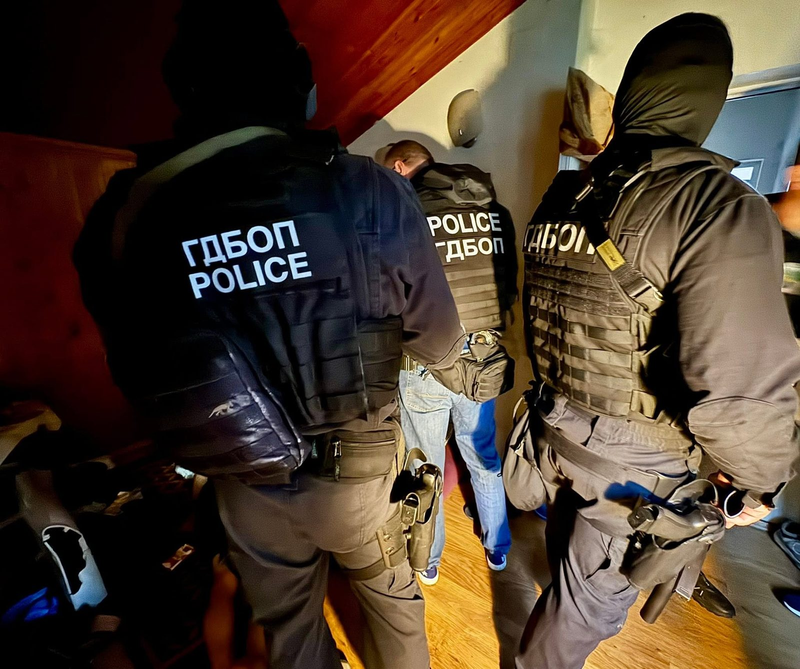
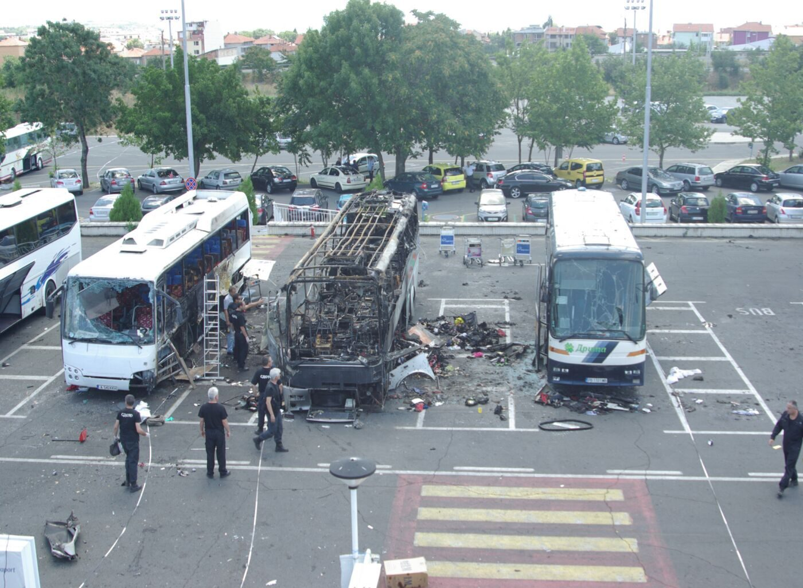
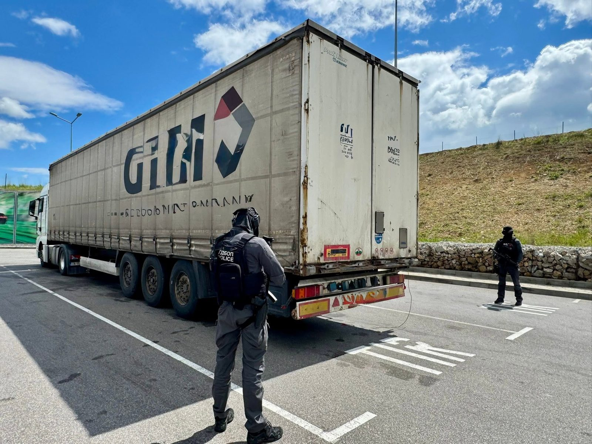
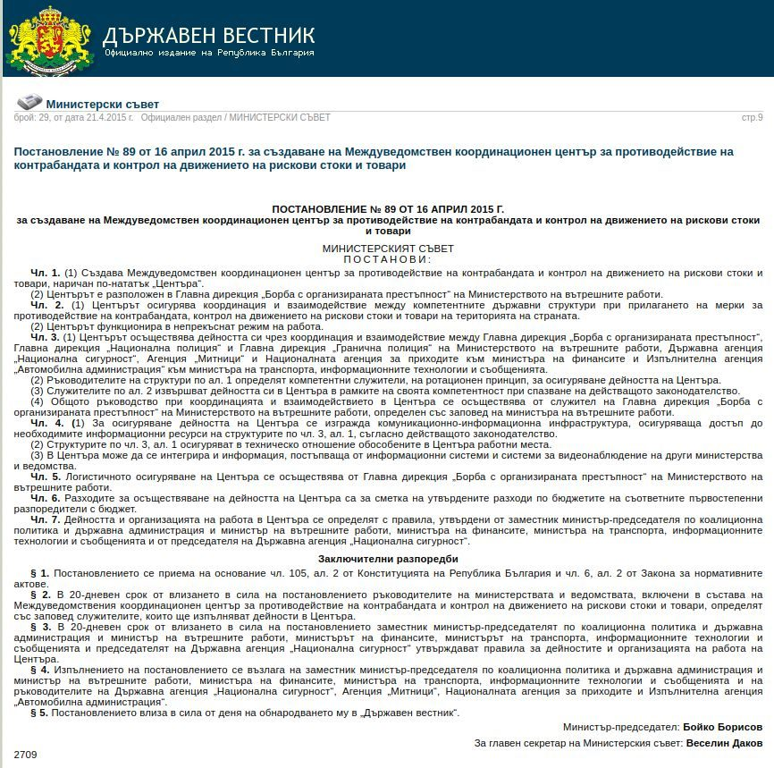

A range of specialised areas covering the full spectrum of countering organised crime on the territory of the Republic of Bulgaria and beyond its borders.

The Drugs line of work at GDCOC-MoI counters crimes involving narcotic substances committed by local and transnational criminal structures. In line with its functional competence, the department collects, processes and analyses information on the involvement of organised crime groups in the illicit trafficking, production and distribution of narcotic substances and precursors, maintaining continuous information exchange and cooperation with national and foreign law enforcement services.
In accordance with their statutory functions and tasks, officers of the Drugs line of work at GDCOC-MoI take part in teams, working groups and commissions established jointly with other state bodies, services and authorities of other states and international organisations in the fight against organised crime in the field of narcotic and psychotropic substances.
Recent years have brought new drug-related challenges — the emergence of new psychoactive substances (designer drugs) is accelerating, and new chemicals for their production, new trafficking methods and distribution channels are appearing.
New psychoactive substances are an attempt to evade legal control by altering the chemical composition of known synthetic drugs. Addiction to them is the same as to the "traditional" ones — and even increasing — which attracts drug abusers.
Control of "designer drugs" is not governed by a single, directly applicable body of European and international legislation. The rapidly evolving trends in the illicit trafficking and market of these substances made it necessary in 2011 to adopt amendments to the Narcotic Substances and Precursors Control Act and to issue a new Council of Ministers Ordinance on the classification of substances as narcotic. These regulatory changes provide flexible control over newly emerging narcotic substances, and as a result Bulgaria possesses one of the most effective control mechanisms over them within the European Union.
The Trafficking in Cultural Valuables line of work at GDCOC-MoI is a specialised structural unit whose principal objective is to counter the illicit trafficking of cultural valuables from and through the territory of the Republic of Bulgaria to other countries. The sector's activity is regulated by Art. 39, para. 2, item 7 of the Ministry of the Interior Act. It is carried out in the context of investigating both organised crime groups and their individual members, as well as all types of criminal acts preceding and accompanying the trafficking.
The sector's efforts are focused not only on preventing the illegal export and sale abroad of Bulgaria's cultural heritage and on recovering individual items, but also on the complete and lasting neutralisation of the criminal groups involved in such illegal activity.
As a result of the sector's work since 2006, tens of thousands of movable cultural valuables have been returned to the Bulgarian state, a large part of which are unique works of ancient art.
The sector's officers cooperate successfully with all Bulgarian and foreign institutions (including those outside the Ministry of the Interior and the Customs Agency) working to protect cultural heritage, and propose and develop joint projects in this field.

The Cybercrime Directorate of GDCOC-MoI was established on 15 March 2023. It is the first directorate within the structure of the General Directorate Combating Organised Crime.
Countering cybercrime in Bulgaria dates back to March 1998, when the Intellectual Property and Computer Crime Sector was formed within the then structure of NSBOP (today GDCOC). Over the years the unit's staff, name and capacity have grown — it evolved into a department of GDCOC and, today, a directorate.

The Cybercrime Directorate performs tasks to counter organised crime groups and individuals engaged in:
The directorate's officers cooperate with government organisations, private companies, foundations and citizens to ensure a timely response to crimes involving high-tech means and methods.
Since February 2007 the unit has hosted the 24/7 National Contact Point for the preservation of computer data. It was established under the 2001 Budapest Convention on Cybercrime, its main purpose being timely and direct contact with police and law enforcement officers directly engaged in combating cybercrime around the world.

The officers of the specialised Human Trafficking line of work at GDCOC-MoI carry out the following priority activities:
To identify persons involved in trafficking in human beings for the purpose of:
Disrupting the activity of organised crime groups involved in trafficking in human beings, regardless of the form of exploitation.

The Migrant Smuggling line of work at GDCOC-MoI counters organised crime groups engaged in the illegal movement across borders and the smuggling of migrants through the territory of the Republic of Bulgaria.
Its work includes detecting and neutralising criminal networks, gathering evidence for the prosecution of offenders, and cooperating with national and international partners — Europol, Interpol, and border and migration services.
The Counter-Terrorism line of work comprises several sectors whose officers perform the following core tasks:

The Corruption line of work at GDCOC-MoI conducts operational and detection activity under Art. 8 of the Ministry of the Interior Act to detect, prevent and disrupt crimes and other violations by officials at the highest levels of government, the judiciary, and state and local authorities.
It cooperates and carries out coordinated actions and operations with other specialised Bulgarian and foreign anti-corruption structures.
The Money Laundering line of work at GDCOC-MoI conducts operational and detection activity to detect, prevent and disrupt crimes involving money laundering and fraud with European Union funds, as well as tracing and tracking assets and capital derived from criminal activity.
Money laundering is the concealment of the true origin of funds obtained through criminal activity, via a series of seemingly legitimate financial operations so that the money appears to have a lawful source. Fraud involving European Union funds includes the unlawful receipt or spending of money under EU programmes through documents with false content, fictitious projects and inflated or non-existent costs.
A common money-laundering method is the recruitment of so-called “money mules.” Learn how to recognise and avoid that role in the “Don’t be a mule” campaign.
The “Crimes against the tax and social-security system” line of work at GDCOC-MoI counters organised crime groups that commit tax and social-security offences within the meaning of Chapter Seven, Section IV of the Criminal Code (Articles 255–260).
Its work targets the detection and disruption of: evasion of the assessment or payment of tax liabilities on a large and especially large scale; value-added tax fraud, including fictitious-supply and “missing trader” schemes; the use of documents with false content and false accounting entries before the revenue authorities; and the failure to withhold and remit taxes and mandatory social-security contributions.
Investigations are carried out in close cooperation with the National Revenue Agency (NRA), the Customs Agency and the competent prosecutor’s offices, including in defence of the financial interests of the Republic of Bulgaria and the European Union.
The officers work on the prevention and detection of crimes against the financial and credit system.
Their core tasks are the prevention and detection of:
Thanks to the officers' work, numerous crimes involving counterfeit euro, lev and US dollar banknotes, bank card data theft and identity theft have been detected and prevented.
Losses of millions of leva and euro have been prevented — both to the budgets of EU member states and Bulgaria, and to individual citizens.

The officers' core tasks are countering and disrupting organised crime groups engaged in:
The Smuggling line of work's activity is focused primarily on curbing the illegal production, distribution and transit of cigarettes without excise labels, the production and distribution of high-alcohol beverages without — or with counterfeit — excise labels, the consumption of fuels on which the due excise duty and VAT have not been paid, and commodity smuggling.
The Investigation line of work at GDCOC-MoI was established to conduct pre-trial investigations throughout the country relating to the formation of, participation in and leadership of organised crime groups, and crimes committed by or on behalf of organised crime groups.
The Inter-agency Coordination Centre for Countering Smuggling and Control of the Movement of High-Risk Goods and Cargo was established in April 2015 by decree of the Council of Ministers.
The Centre ensures coordination and interaction between the competent state structures in applying measures to counter smuggling and to control the movement of high-risk goods and cargo.
It consists of representatives of the following state structures:
The Centre maintains a 24-hour operational duty service, collecting, processing and analysing information on goods and cargo in specific cases as well as on goods subject to smuggling. It analyses and monitors high-risk vehicles, goods and cargo on the territory of the country through coordinated joint actions of the state structures represented in the Centre.
